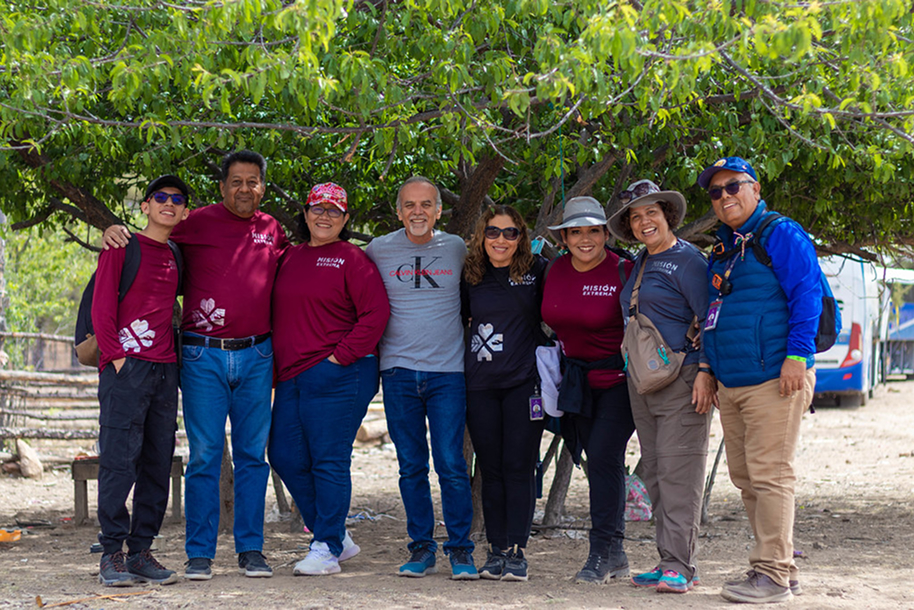

¿Quiénes somos?
Somos un equipo compuesto por voluntarios de diversas edades y procedencias, unidos en el propósito de marcar la diferencia.
El comienzo
Todo comienza con una clase de Biblia, cuando un grupo de jóvenes liderados por el Ptr. Agustín Andrade sintieron un llamado especial de servicio.
Nuestra Primera Misión
En el año 2006, nos adentramos a la región de Lacandona en Chiapas.
Expansión y crecimiento
Nos fuimos expandiendo y creciendo, lo cual nos llevó a lugares como la Sierra Tarahumara, comunidades zapotecas y la cultura Q’eqchi’, todo durante el transcurso de 7 años.
Años posteriores
Enfrentando nuevos desafíos en Guanajuato y la Sierra Tarahumara, pero siempre tomados de la mano de Dios.
Respondiendo al llamado
Respondemos al llamado del amor con todo lo que somos y todo lo que tenemos y continuaremos el viaje hacia dondequiera nos lleve el viento del Espíritu.
“Servir al pobre es hacerle un préstamo al Señor; Dios pagará esas buenas acciones” Prov. 19:17 Agustín Andrade